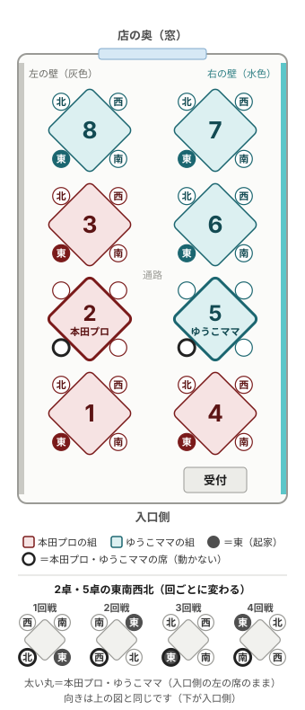

1. 大会の概要
| 大会 | 第20回 Halu杯（四人麻雀） |
|---|---|
| 日にち | 2026年10月24日（土） |
| 貸切 | 10:00〜18:30でお願いします |
| 人数 | 32名・8卓（参加者30名・本田朋広プロ・ゆうこママ）とカメラマン1名 |
| ゲスト | 本田朋広プロ（日本プロ麻雀連盟） |
| 主催 | ゆうこママ |
2. お打ち合わせの内容
時間
- 当日は、10:00の開店をお願いします。
- 10:30より前に着いた参加者の入店も、お願いします。
- 貸切は、10:00〜18:30でお願いします。
- 18:30を過ぎて使わせていただく場合は、延長料金でのご対応をお願いします。
立ち会いとお手伝い
- 当日は、ママス様とパパス様の立ち会いをお願いします。
- 写真撮影の補助・トイレのときの代走・点数計算などのお手伝いを、お願いします。
- 当日のご連絡は、LINEでお願いします。
卓と設備
- 自動卓は、大会のルールに合わせたご準備をお願いします。赤ドラは5萬・5筒・5索が1枚ずつ、25,000点持ちです。
- マイクの貸し出しをお願いします。
- 集計表は主催側のシステム（点数報告ページ）で出しますので、テレビなどのご用意はなくて大丈夫です。
お部屋と場所
- 主催用と本田プロ用の控室の貸し出しを、お願いします。
- 控室は、本田プロの休憩と、賞品・トロフィーの置き場に使わせていただく予定です。
- 荷物は、それぞれの席にかけさせていただきます。
- 喫煙は、受付の反対側の外の喫煙所でお願いします。
飲食とサイン
- 軽食は、片手で食べられるものかお菓子を中心にいたします。
- サイン用の品の販売を、お願いします。
- サインをご希望の参加者には、そちらをご購入いただくようご案内します（主催から色紙は配りません）。
3. 卓の配置（予定）

- 入口側から店の奥（窓）に向かって、左の列が1・2・3・8卓、右の列が4・5・6・7卓と理解しております。
- 本田プロの組は2・4・7・8卓、ゆうこママの組は1・3・5・6卓を使わせていただく予定です。
- 予選で本田プロと当たらないゆうこママの組は、本田プロが見える近くの卓にしております。
- 予選の席は、入口側の左を東、右を南、奥の右を西、奥の左を北とする予定です（2卓・5卓を除く）。
- 2卓・5卓は、本田プロ・ゆうこママが入口側の左の席のまま打ちます。東南西北は回ごとに変わります（図の下）。
- 準決勝・決勝は、2卓と5卓を使わせていただく予定です。席と起家はサイコロで決めます。
- 予選で誰がどの卓・どの席に座るかは、10月23日（金）の夜にくじで決まります。
- 図は、お店の写真をもとに作った目安です。
4. 当日の流れ（予定）
| 時刻 | 内容 |
|---|---|
| 10:00 | 開店（ファースト様）・主催側の設営 |
| 10:30 | 参加者の集合・受付 |
| 10:45ごろ | 本田プロが到着（福岡空港からタクシー） |
| 11:00 | 開会・ルール説明・ゲスト紹介マイク |
| 11:15 | 予選1回戦（11:55打ち切り） |
| 12:00 | 予選2回戦（12:40打ち切り） |
| 12:45 | 軽食休憩（15分） |
| 13:00 | 本田プロのトークショー（15分）マイク |
| 13:15 | 休憩・移動（5分） |
| 13:20 | 予選3回戦（14:00打ち切り） |
| 14:05 | 予選4回戦（14:45打ち切り） |
| 14:50 | 集計・準決勝に進む人の発表（15分） |
| 15:05 | サイン会・写真会（50分）マイク撮影のお手伝い |
| 15:55 | 準決勝（2卓・5卓。60分制・16:55打ち切り）。ほかの24名も、ほかの6卓で打ちます |
| 16:55 | 集計・決勝に進む人の発表（10分） |
| 17:05 | 決勝（時間制限なし・18:00が目安）。全員で観戦します |
| 18:00 | 集計（5分）。決勝が終わってから |
| 18:05 | 表彰・閉会（25分）マイク |
| 18:30 | 終了・片付け（貸切の終わり）。これを過ぎる場合は延長となります |
| 19:00 | 本田プロがタクシーで空港へ出発 |
予選は1回40分です。40分が経ったら、その局で終わります。
決勝は時間制限がないため、18:00より後の時刻は目安です。
5. ご協力のお願いと、主催側で行うこと
当日は、次のことでお世話になります。
ファースト様にお願いしたいこと
- 10:00の開店
- ママス様・パパス様の立ち会い
- 写真撮影の補助・トイレのときの代走・点数計算などのお手伝い
- 大会のルールに合わせた自動卓のご準備
- マイクと控室（主催用・本田プロ用）のお貸し出し
- サイン用の品の販売
- 18:30を過ぎた場合の延長のご対応
主催側で行うこと
- 10:00〜10:30の設営と、終了後の片付け
- 受付と、当日の進行（司会）
- 卓番号札と名札の用意
- 点数の集計（各卓の代表が、スマホで点数報告ページから送ります）
- 写真と動画の撮影（運営が撮ります。動画は公開しません）
6. あらかじめお伝えしたいこと
- トイレが1つのため、対局中にトイレへ行く参加者がいるときは、代走をお願いします。
- 動画は運営だけが撮影し、公開いたしません。参加者には、写真だけを撮るようご案内します。
- 本田プロをご紹介いただく際は、「日本プロ麻雀連盟の本田朋広プロ」でお願いします。
7. 関連ページ
点数は、各卓の代表がスマホで点数報告ページから送ります。入力のしかたは「点数入力の練習」でお試しいただけます。